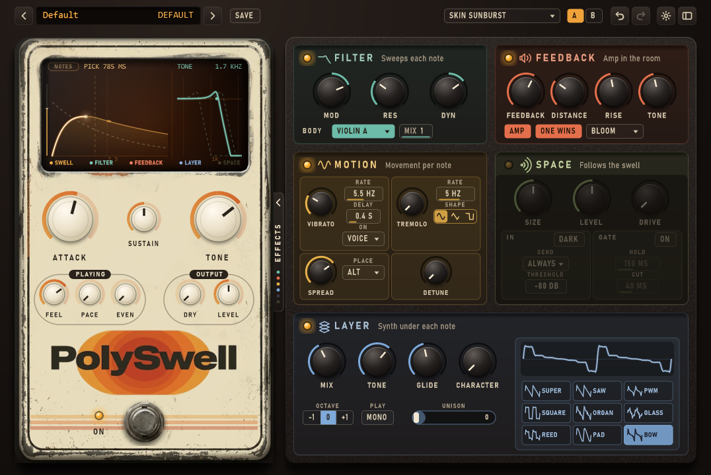

A free polyphonic swell and sustain pedal for guitar. Every note swells in on its own and rings as long as you like, for smooth leads, ambient pads and amp-in-the-room feedback.

ATTACK, SUSTAIN and TONE act on each note on its own. The swell follows a measured hardware POG2, and MATCH brings swells up to your pick level.
FEEL, PACE and EVEN shape the swell from how hard and how fast you play.
Filter sweeps, amp-in-the-room feedback, vibrato and detune, a synth layer under each note, and a space that follows the swell.
A live window draws every note you play, and shows a picture of what each knob does while you turn it.
Presets for Lead, Pad and Feedback, undo/redo, A/B compare, MIDI learn for footswitches and expression pedals, and four skins.
Built to run next to your amp sim, with no added latency on the main path.
PolySwell-II-Windows.zip.PolySwell II.vst3 to C:\Program Files\Common Files\VST3.PolySwell-II-macOS.zip.install-mac.command. If macOS blocks it, right-click it and choose Open. On macOS 15 and newer, go to System Settings › Privacy & Security › Open Anyway.xattr -dr com.apple.quarantine ~/Library/Audio/Plug-Ins/VST3/PolySwell\ II.vst3 ~/Library/Audio/Plug-Ins/Components/PolySwell\ II.componentYou need CMake 3.22+ and Visual Studio 2022 (Windows) or Xcode (macOS). JUCE downloads by itself.
cmake -B build -DCMAKE_BUILD_TYPE=Release
cmake --build build --config Release --target PolySwell_VST3